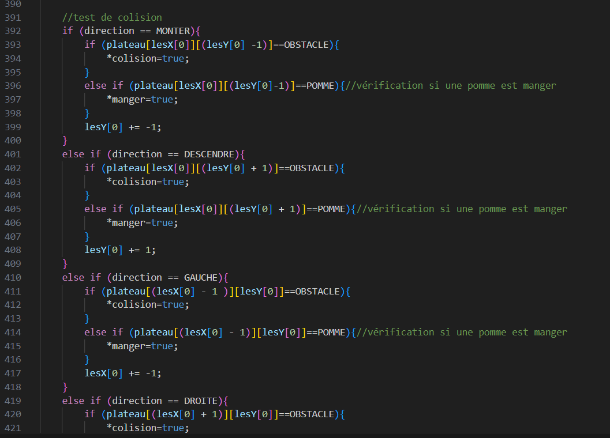
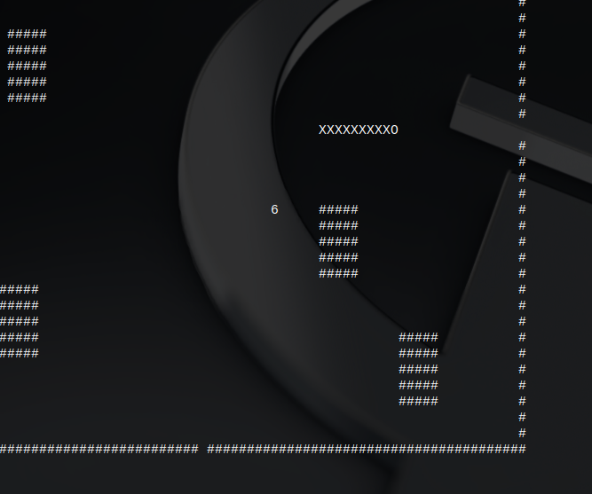
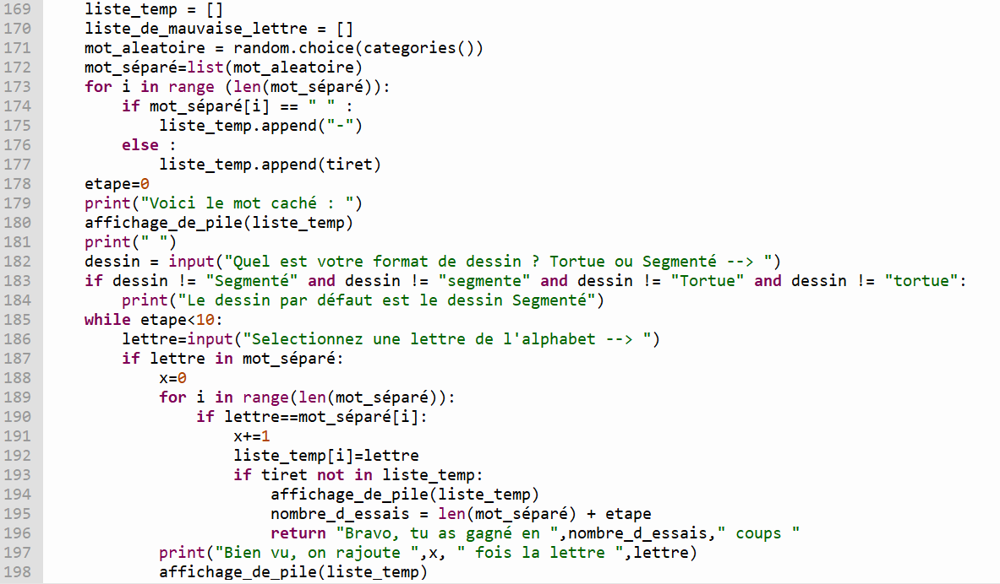
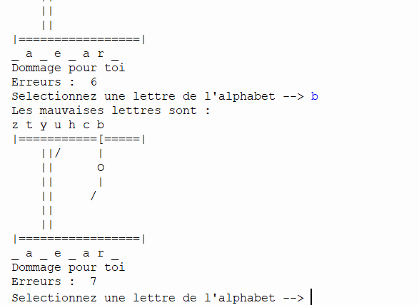
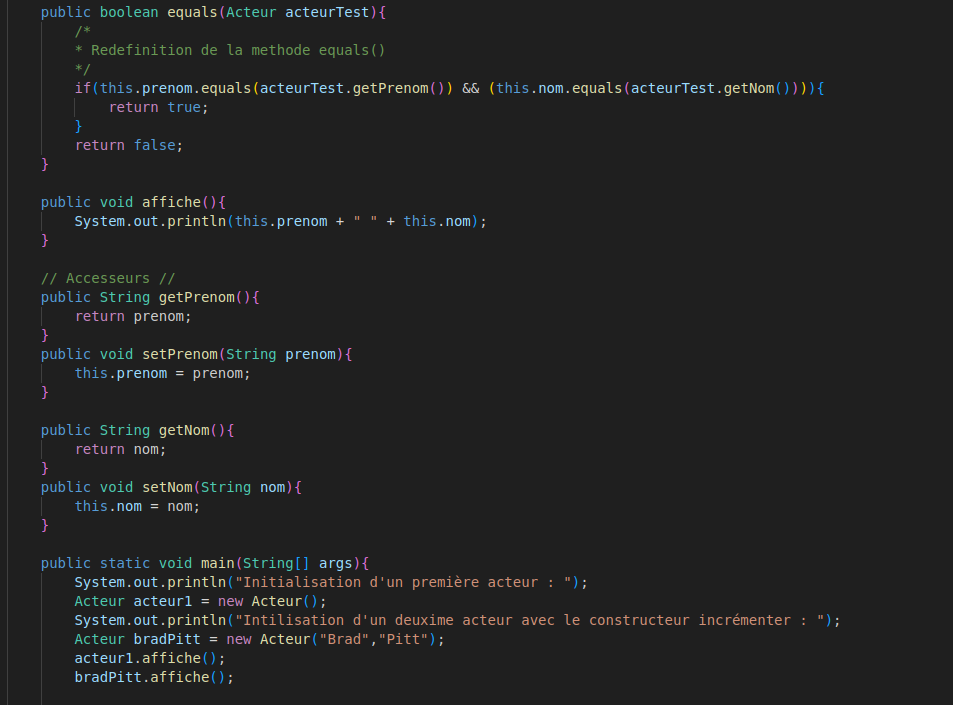
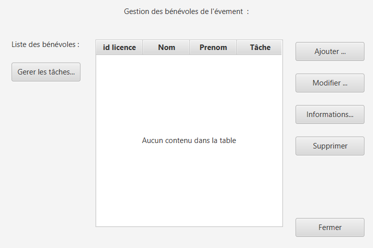

Le jeu du Snake

Durant ma formation à l’IUT, j’ai eu la chance de développer le jeu du Snake.
Ce jeu est très simple : un serpent, guidé par l’utilisateur avec les touches z, q,
s, d, a pour objectif de manger le plus de pommes possible. Ici, notre jeu est codé en langage C.
L’exécution de ce jeu nécessite un compilateur C pour passer notre code en un fichier exécutable
par l’ordinateur. Lors de ce projet, nous avons introduit la notion de stratégie de test.
Ces stratégies permettent au développeur de gagner beaucoup de temps lorsqu’il veut s’assurer de la
bonne exécution de son programme. Le développement de ce jeu m’a permis d’améliorer mes connaissances
en langage C, mais aussi approfondir ma réflexion algorithmique. Je vous donne la possibilité d’essayer
ce jeu avec un exécutable simplement sur un terminal Linux grâce à la commande suivante :
./nom_du_fichier.
Fichier executable du jeu Snake.

Le jeu du Pendu

Au lycée, lors de l’année de terminal, nous avons développé le jeu populaire du pendu.
Petit rappel de règles : vous avez pour objectifs de trouver un mot caché en utilisant
les lettres de l’alphabet. Attention, passé les 10 erreurs, vous aurez perdu !
Le développement de ce jeu c’est fait en Python. Nous avons au préalable programmer
les classes objets File et Pile. L’objectif était de traiter l’affichage et le traitement
des lettres avec ces méthodes. Après la création de fonctions permettant au programme
principal de jouer le jeu, nous avons géré le dessin du pendu avec la librairie Python Turtle.
La manipulation de plusieurs fichiers, de classes objets, de listes et de fonctions rend ce
projet plutôt complet pour un premier Jeu avec Python.

Première appli

Au cours du semestre, nous avons réalisé une application en Java en utilisant le framework
JavaFX. Ce projet s'inscrit dans la continuité de notre apprentissage en conception orientée
objet et en développement d’interfaces graphiques. Nous avons débuté par la création de diagrammes
UML afin de modéliser l’architecture de l’application, développée pour répondre aux besoins d’une
association de danse. L’interface homme-machine (IHM) a été conçue avec SceneBuilder, en mettant
l’accent sur l’ergonomie pour garantir une utilisation simple, intuitive et agréable pour l’utilisateur
final. Nous avons également mis en place une phase de tests fonctionnels afin de valider le bon
comportement de l'application et corriger les éventuelles anomalies. Ce projet nous a permis de
consolider nos compétences en modélisation, en développement Java, en conception d’interfaces utilisateurs
et en assurance qualité logicielle.
